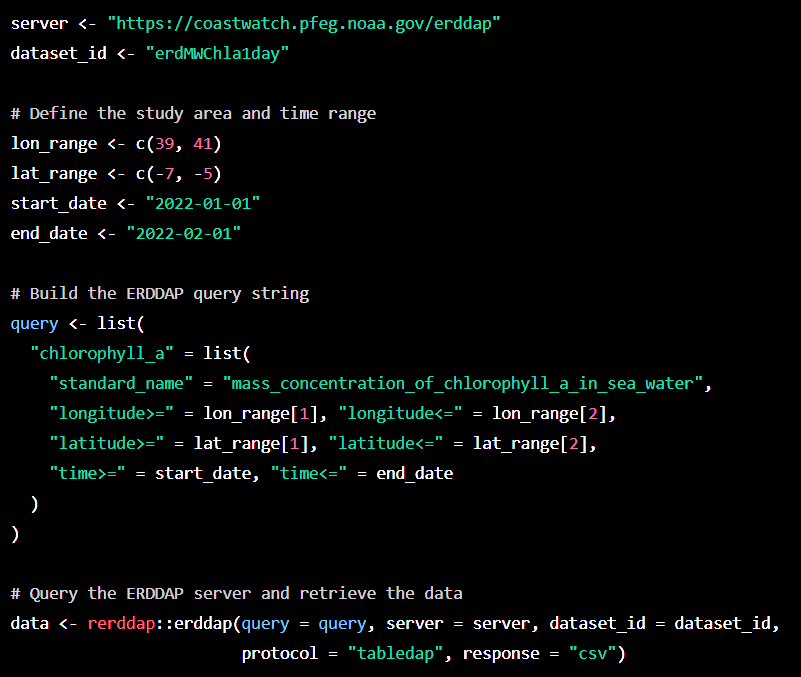
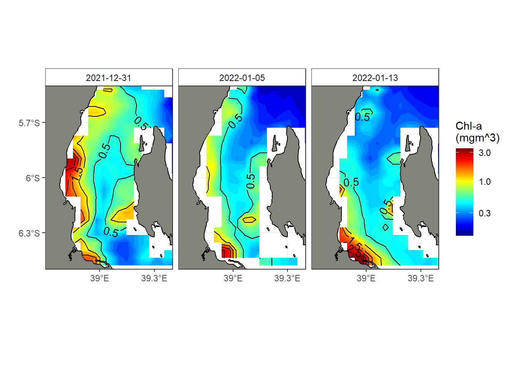

![]()

Can ChatGPT Replace a Data Scientist Role?
R
Modelling
Introduction
In recent years, the rise of artificial intelligence (AI) and machine learning (ML) has led to the development of chatbots like chatGPT (Rodriguez, 2023), which can simulate human conversation. These chatbots are now being used in various industries to improve customer service, automate tasks, and even provide medical advice. However, as chatbots become more advanced, some people are asking whether they could replace human data scientists. In this blog post, we will explore this question and examine the potential benefits and drawbacks of using chatbots in data science.

What is a Chatbot?
Wikipedia define chatbot as a computer program that uses natural language processing (NLP) to simulate human conversation (Wikipedia contributors, 2023). Chatbots can be designed to perform various tasks, such as answering customer queries, providing recommendations, or even assisting with medical diagnoses. Some chatbots are rule-based, which means they follow a predefined set of rules to respond to user input. Others are powered by AI and ML algorithms, which enable them to learn from user interactions and improve their responses over time.
What is Data Science?
Data science is the field of study that involves extracting insights and knowledge from data. Data scientists use various techniques, such as statistical analysis, machine learning, and data visualization, to analyze large datasets and identify patterns and trends. Data science is used in many industries, including healthcare, finance, and marketing, to make data-driven decisions and improve business outcomes.
Can Chatbots Replace Data Scientists?
The short answer is no. While chatbots can be useful tools for data analysis and decision-making, they cannot replace the expertise and experience of a human data scientist. Here are some reasons why:
Limited Domain Knowledge: Chatbots are designed to perform specific tasks within a limited domain. They may be able to provide answers to simple questions or perform basic analyses, but they lack the domain knowledge and expertise required for complex data science tasks.
Lack of Creativity: Data science involves creative problem-solving and the ability to think outside the box. Chatbots are limited by their programming and cannot come up with innovative solutions or new approaches to data analysis.
Limited Data Access: Chatbots can only access data that has been pre-defined and made available to them. They cannot access or analyze data that has not been specifically programmed into their system.
Lack of Human Interaction: Data science involves collaboration and communication between team members. Chatbots cannot replace the value of human interaction and the ability to discuss ideas and insights with other experts in the field.
Benefits of Using Chatbots in Data Science
While chatbots cannot replace human data scientists, they can be useful tools for data analysis and decision-making. Here are some potential benefits of using chatbots in data science:
Improved Efficiency: Chatbots can automate routine tasks, such as data cleaning and preprocessing, which can save time and improve efficiency.
Faster Response Times: Chatbots can provide instant responses to user queries, which can speed up the decision-making process.
Scalability: Chatbots can handle large volumes of data and perform analyses at scale, which can be useful for businesses with large datasets.
User-Friendly Interface: Chatbots provide a user-friendly interface for data analysis, which can make it easier for non-technical users to access and understand data insights.
Drawbacks of Using Chatbots in Data Science
While chatbots can provide some benefits for data analysis, there are also some potential drawbacks to consider:
- Limited Accuracy: Chatbots may provide inaccurate responses if they are not properly trained or if they lack the necessary domain knowledge.
For example, I threw a question to ask chatGPT to retrieve chlorophyll-a dataset in the Pemba Channel from MODIS. It did wonderful job. As plainly seen in Figure 1, it first loaded the rerddap package and defined the ERDDAP server URL and the dataset ID for the MODIS Aqua Chlorophyll-a Level 3 dataset. It then defined the study area and time range by specifying longitude and latitude ranges, and start and end dates. It built the ERDDAP query string by specifying the variable name, standard name, and the desired ranges for longitude, latitude, and time.Then used the
erddapfunction from the rerddap package to query the ERDDAP server and retrieve the data. The data is returned as a data frame in CSV format.
I copied the code chunk from ChatGPT snippet (Figure 1) and paste it in the chunk below:
library(rerddap)
# Define the ERDDAP server URL and dataset ID
server <- "https://coastwatch.pfeg.noaa.gov/erddap"
dataset_id <- "erdMWChla1day"
# Define the study area and time range
lon_range <- c(39, 41)
lat_range <- c(-7, -5)
start_date <- "2022-01-01"
end_date <- "2022-02-01"
# Build the ERDDAP query string
query <- list(
"chlorophyll_a" = list(
"standard_name" = "mass_concentration_of_chlorophyll_a_in_sea_water",
"longitude>=" = lon_range[1], "longitude<=" = lon_range[2],
"latitude>=" = lat_range[1], "latitude<=" = lat_range[2],
"time>=" = start_date, "time<=" = end_date
)
)
# Query the ERDDAP server and retrieve the data
data <- rerddap::erddap(query = query, server = server, dataset_id = dataset_id,
protocol = "tabledap", response = "csv")Despite the detailed explanation of chatGPT provided, when the chunk is exuted, it resulted into an error message stating that Error: ‘erddap’ is not an exported object from ‘namespace:rerddap’. It failed miserable because the erddap function used in line 24 of the chunk code above is not part of the erddap package. Therefore, as it has been emphasized, inaccurate information is a common thing we expect from these kind of tools, and the essence of expert to support the error is paramount. Therefore, the code hunk below provide a correct functions and code line that answer the question posted in the chatGPT.
library(rerddap)
library(tidyverse)
chl = rerddap::griddap(
x = "erdMH1chla8day",
longitude = c(38, 39.5),
latitude = c(-6.5,-5.5),
time = c("2022-01-01", "2022-01-31"),
fmt = "csv") %>%
dplyr::as_tibble() %>%
dplyr::mutate(time = lubridate::as_date(time))
chl# A tibble: 4,625 x 4
time latitude longitude chlorophyll
<date> <dbl> <dbl> <dbl>
1 2021-12-31 -5.48 38.0 NaN
2 2021-12-31 -5.48 38.0 NaN
3 2021-12-31 -5.48 38.1 NaN
4 2021-12-31 -5.48 38.1 NaN
5 2021-12-31 -5.48 38.1 NaN
6 2021-12-31 -5.48 38.2 NaN
7 2021-12-31 -5.48 38.2 NaN
8 2021-12-31 -5.48 38.3 NaN
9 2021-12-31 -5.48 38.3 NaN
10 2021-12-31 -5.48 38.4 NaN
# ... with 4,615 more rowsFinally, we use the ggplot2 package (Campitelli, 2019; Wickham, 2016) to plot the chlorophyll-a data. I specified the longitude and latitude values from the data frame, and used the z parameter to specify the chlorophyll-a values for each pixel in the plot. I also specified a color scale for the plot using the scale_fill_gradientn function separated plots for each date of the year with The facet_wrap() function. The labs() function was used to add a title and axis labels to the plot.
ggplot(
data = chl %>% filter(time < "2022-01-16"),
aes(x = longitude, y = latitude, z = chlorophyll)
)+
metR::geom_contour_fill(bins = 120)+
metR::geom_contour2(aes(label = ..level..)) +
ggspatial::layer_spatial(tz, fill = "#84837a", color = "black", linewidth = .5)+
scale_fill_gradientn(colours = oce::oce.colors9A(120), trans = scales::log10_trans(),
name = "Chl-a\n(mgm^3)")+
metR::scale_x_longitude(ticks = .3)+
metR::scale_y_latitude(ticks = .3) +
coord_sf(xlim = c(38.7,39.4), ylim = c(-6.5,-5.5))+
facet_wrap(~time, nrow = 1) +
theme_bw()+
theme(strip.background = element_rect(fill = "white"))
Conclusion
In conclusion, while chatbots like ChatGPT can be useful tools for data analysis and decision-making, they cannot replace the expertise and experience of a human data scientist. Chatbots are limited by their programming and lack the domain knowledge, creativity, and human interaction required for complex data science tasks. However, chatbots can provide some benefits, such as improved efficiency, faster response times, scalability, and a user-friendly interface. As with any technology, it is important to carefully consider the potential benefits and drawbacks before implementing chatbots in data science.
Cited sources
Campitelli, E., 2019. metR: Tools for easier analysis of meteorological fields.
Rodriguez, J.C., 2023. Chatgpt: Interface to ’ChatGPT’ from r.
Wickham, H., 2016. ggplot2: Elegant graphics for data analysis. Springer-Verlag New York.
Wikipedia contributors, 2023. Chatbot — Wikipedia, the free encyclopedia.